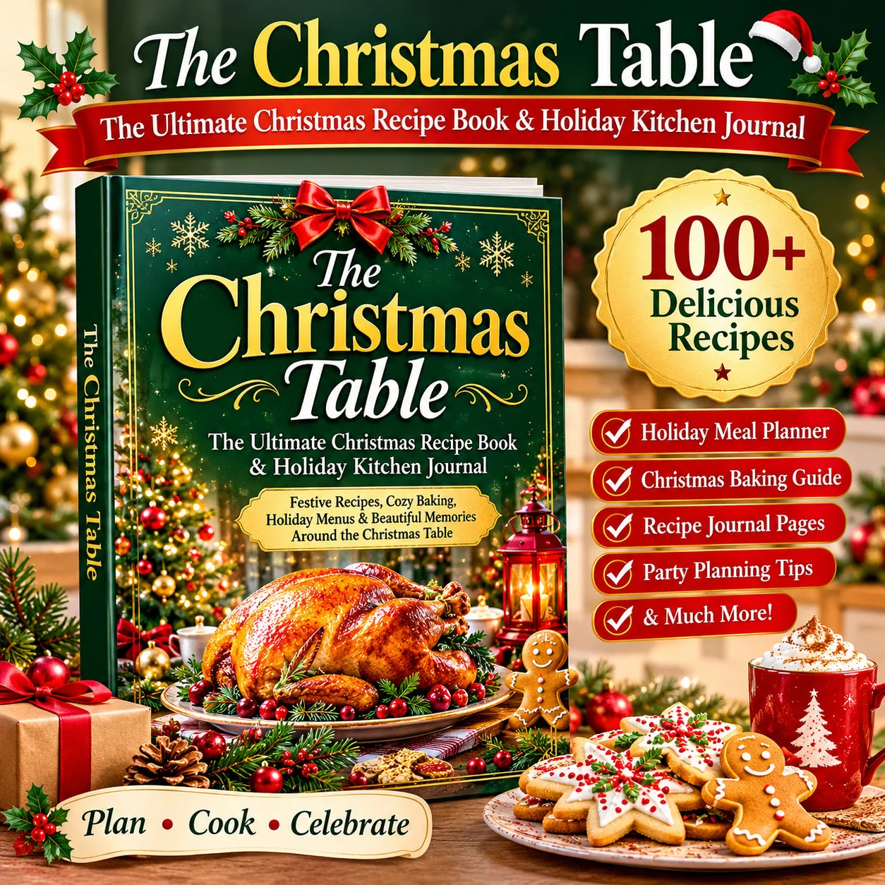

Save 61%

Journals · Digital download

Bring warmth, beautiful food, and memorable traditions to the holiday season. The Christmas Table combines a thoughtfully designed Christmas cookbook with practical hosting planners, personal recipe-journal pages, and keepsakes you'll want to revisit.
You’ll leave slowlinen.shop. Final price, availability and order terms are confirmed by the merchant.
Explore the complete product specifications, contents and usage details.
Bring warmth, beautiful food, and memorable traditions to the holiday season.The Christmas Tablecombines a thoughtfully designed Christmas cookbook with practical hosting planners, personal recipe-journal pages, and keepsakes you'll want to revisit.
2026 Edition • 114-page printable PDF • 58 festive recipes • Holiday planners & journal pages
Discover eight chapters of holiday cooking, from relaxed Christmas mornings to celebratory dinners and homemade gifts:
Recipe pages include ingredients, step-by-step methods, prep and cook times, yields, equipment, serving suggestions, make-ahead guidance, storage notes, substitutions, allergen information, and cooking tips. Measurements use U.S. customary units with practical metric conversions.
Enjoy a calmer countdown to Christmas with printable planners for:
Holiday home cooks, Christmas hosts, festive baking enthusiasts, families preserving food traditions, and anyone who loves a beautiful, practical Christmas kitchen organizer.
Please note:Recipes are original editorial writing and have not been independently kitchen-tested. Preparation and cooking times are guides; follow written instructions and appropriate food-safety practices. Food and chapter photography is AI-assisted illustrative imagery, not a guarantee of the finished result. Use a food thermometer and check allergens and product labels as needed.
Questions about your download? Contactsupport@.store.
Journals · Digital download


Journals · Digital download


Journals · Digital download